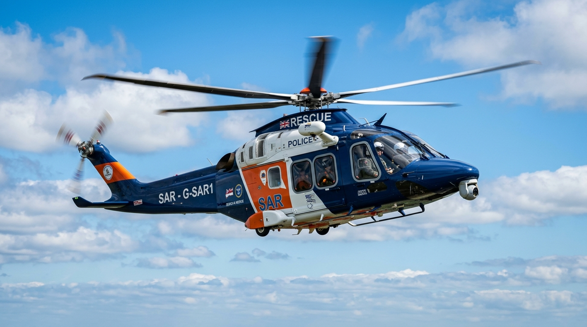
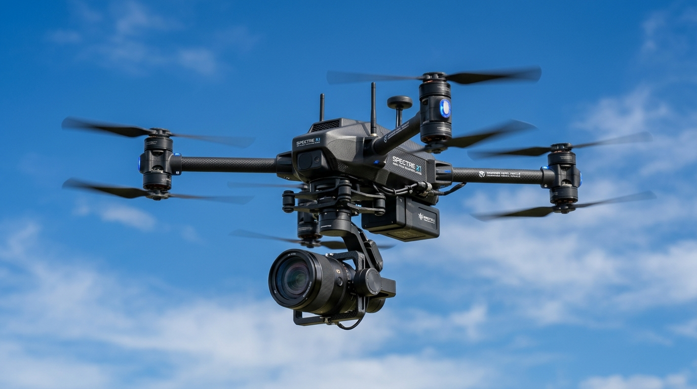
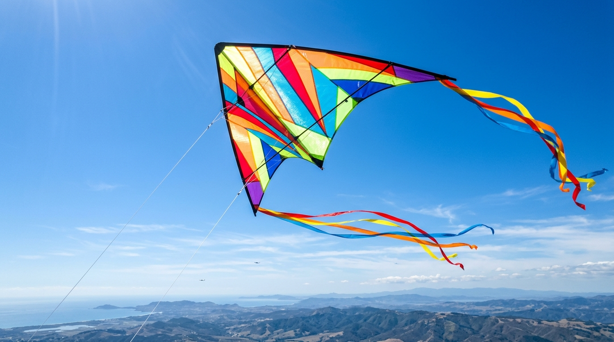

✈ COMPUTER VISION & DEEP LEARNING PROJECT
FLYING OBJECT DETECTION
& CLASSIFICATION
A Multi-Stage Aerial Surveillance System Integrating YOLO12 Detection, ByteTrack Trajectory Tracking, and 5 Hybrid Deep Learning Classifier Heads.
CORE STACK:
- Detector: YOLO12 Balanced (Weights: best.pt)
- Tracker: ByteTrack Multi-Object Associator
- Heads: CNN | LSTM | Transformer | BiLSTM+Attn | cGAN
✈
TABLE OF CONTENTS
01
PROJECT OVERVIEW
Problem motivation & the 6 flying object target classes
02
ARCHITECTURE
YOLO12 detector, ByteTrack tracker & MobileNetV3
03
5 HYBRID HEADS
CNN, LSTM, Transformer, BiLSTM+Attn & cGAN heads
04
BENCHMARKS & UI
Accuracy scores (91.98% LSTM) & Streamlit web app
✈ 01. PROJECT OVERVIEW
Problem Statement & Aerial Surveillance Challenges
01
Extreme Scale Variance
Distant & Miniature Targets
- Flying objects like drones or birds often occupy as few as 15x15 pixels in 1080p footage.
- High altitude and distant perspectives cause severe loss of structural visual cues.
- Standard detectors suffer high miss rates on small airborne targets.
02
High Velocity & Maneuvering
Rapid Motion & Frame Exit
- Airborne objects exhibit non-linear acceleration, rapid banking, and high-speed transit.
- Motion blur frequently degrades edge contours and texture fidelity.
- Single-frame detectors cannot assess velocity without temporal context.
03
Inter-Class Ambiguity
Deceptive Visual Similarities
- From a distance, a soaring bird and an aerodynamic kite exhibit nearly identical static contours.
- Commercial airplanes and drones share planar silhouette traits at sharp angles.
- Requires combining spatial appearance with temporal trajectory tracking.
✈ 01. PROJECT OVERVIEW
Target Aerial Object Classes (Visual Taxonomy)
AIRPLANE
Commercial airliners & jets, high-speed fixed-wing flight patterns.

HELICOPTER
Rotary-wing aircraft, hover dynamics, rescue & transport flight profiles.

DRONE (UAV)
Quadcopter surveillance drones, agile maneuvering, multi-rotor hover.

KITE
High-altitude aerodynamic stunt & leisure kites, wind-propelled dynamics.
ADDITIONAL SUPPORTED CLASSES: BIRD & PARACHUTE
• Bird: Biological flapping & soaring patterns, distinguished via temporal sequence heads. • Parachute: Canopy descent aerodynamics.
✈ 02. SYSTEM ARCHITECTURE
Multi-Stage Aerial Detection & Tracking Architecture
1. VIDEO INPUT
Raw Video Stream
- Accepts MP4, AVI, MOV, WebM, MKV.
- Decompresses frames sequentially.
- Configurable stride (1, 2, 3, 5, 10).
2. YOLO12
Object Localization
- Anchor-free YOLO12 balanced weights.
- Locates small targets with high recall.
- Filters via confidence threshold (0.10).
3. BYTETRACK
Trajectory Tracking
- Associates bounding boxes over time.
- Assigns persistent Tracker IDs.
- Extracts 4-frame center motion vectors.
4. MOBILENET
Feature Extraction
- Frozen MobileNetV3-Small backbone.
- Crops resized & normalized to 224x224.
- Produces 576-dim feature tokens.
5. HYBRID HEAD
Classification
- Evaluates spatial/temporal tokens.
- Outputs 6-class probability distribution.
- Conducts weighted consensus voting.
✈ 02. SYSTEM ARCHITECTURE
Object Detection Engine: YOLO12 Architecture
YOLO12 Detection Specifications
High-Recall Aerial Localization
- State-of-the-Art Architecture: Employs area attention and flash attention mechanisms for efficient multi-scale spatial receptive fields.
- Balanced Checkpoint: Utilizes trained YOLO12 balanced weights (
best.pt) tuned on multi-class flying objects.
- Small Target Sensitivity: Configurable threshold down to 0.10 confidence, ensuring distant, sub-30-pixel objects are retained.
- Multi-Resolution Inference: Supports input dimensions (320x320 up to 640x640) for balancing GPU/CPU throughput.
- Decoupled Classification: High-recall region proposal generator feeding high-fidelity object crops into specialized downstream heads.
Detection Runtime Parameters
- Default Confidence: 0.10 (Captures small, distant targets)
- Inference Resolution: 640x640 (Optimal edge definition)
- Device Support: Seamless auto-switching between CUDA GPU & CPU
✈ 02. SYSTEM ARCHITECTURE
Multi-Object Trajectory Modeling with ByteTrack
01
Why ByteTrack is Vital for Aerial Video
Continuous Trajectory Association
- Low-Score Retention: Unlike standard SORT which discards boxes below 0.5, ByteTrack recovers true low-confidence boxes (e.g. distant or partially occluded objects).
- Persistent Track IDs: Assigns consistent object IDs across consecutive frames, preventing ID switching when objects bank or turn.
- Kalman Filter Prediction: Smooths bounding box jitter and predicts target location during temporary occlusions (e.g. clouds).
- Trajectory Construction: Accumulates the last 4 observed bounding box centers [x, y, w, h] to compute velocity vectors.
02
Trajectory Feature Representation
580-Dimensional Temporal Token
- 4-Frame Observation Buffer: Maintains a sliding deque of length 4 for every active ByteTrack ID.
- Visual + Motion Concatenation: Each observation combines 576 MobileNetV3 visual features with 4 spatial box-center coordinates → 580-dim input vector.
- Velocity Modeling: Explicitly encodes direction of travel (dx/dt, dy/dt) and change in scale (dw/dt, dh/dt).
- Disambiguation Engine: Crucial for separating flapping birds from soaring kites and steady-altitude UAVs.
✈ 03. HYBRID CLASSIFIERS
Deep Dive: The 5 Specialized Classifier Heads
YOLO12 + CNN
1D Convolutional Net
- Processes single-frame visual tokens.
- 1D Conv layers (576->128->64) with AdaptiveAvgPool.
- Fastest inference head; best for distinct views.
YOLO12 + LSTM
Top Performer (91.98%)
- Processes 4-frame visual + motion sequences (580-dim).
- Hidden dimension: 64; LayerNorm + Linear classifier.
- Learns acceleration & path dynamics.
Transformer
Self-Attention Encoder
- 2-layer Transformer Encoder with 4 attention heads.
- Learns positional spatial token embeddings across crops.
- Captures subtle inter-part visual dependencies.
BiLSTM + Attn
Bidirectional Head
- Bidirectional LSTM with learned attention pooling.
- Processes trajectories forward and backward.
- Highlights critical transitional banking frames.
cGAN + Trans.
Synthetic Augmentation
- Trained with conditional GAN synthesized features.
- Addresses class imbalance and rare viewing angles.
- Improves generalization (+4.11% gain).
✈ 04. BENCHMARKS & DEPLOYMENT
Performance Benchmark & Validation Results
| Hybrid Pipeline Head |
Test Accuracy |
Test Macro F1 |
Validation Acc |
| YOLO12 + LSTM TOP BEST |
91.98% |
92.89% |
82.43% |
| YOLO12 + BiLSTM + Attention |
88.81% |
87.97% |
76.58% |
| YOLO12 + cGAN + Transformer |
82.19% |
81.77% |
82.42% |
| YOLO12 + CNN |
81.05% |
79.97% |
84.07% |
| YOLO12 + Transformer |
78.08% |
76.92% |
81.32% |
Production Checkpoints Included
- Detector:
yolo12_balanced/weights/best.pt (5.5 MB)
- Heads:
LSTM.pt (0.68 MB), BiLSTM_Attention.pt (1.36 MB), CNN.pt, Transformer.pt, cGAN_Transformer.pt
Key Empirical Findings
Analysis of Results
- Temporal Superiority: The LSTM head achieved the highest overall score (91.98% Acc, 92.89% F1), proving that 4-frame trajectory dynamics are decisive for flying object recognition.
- Attention Benefits: BiLSTM with Attention reached 88.81% accuracy, confirming that weighting informative acceleration phases improves classification.
- cGAN Synthetic Boost: cGAN augmentation lifted Transformer accuracy from 78.08% to 82.19% (+4.11% gain), showing synthetic feature diversity mitigates aerial class imbalances.
- Spatial vs. Motion Tradeoff: CNN heads offer rapid single-frame speed, but temporal heads drastically cut false-positive confusions between kites and birds.
✈ 04. BENCHMARKS & DEPLOYMENT
Video-Level Consensus & Decision Aggregation
01
Confidence-Weighted Voting Engine
Robust Temporal Aggregation
- Frame-Level Robustness: Flying objects frequently undergo temporary specular reflections, motion blur, or partial occlusion causing single-frame misclassifications.
- Weighted Accumulation: Rather than naive unweighted majority voting, each detection contributes its model confidence score to its predicted class bucket.
- Mathematical Formulation: Score(C) = Σ(Confi × I(Classi = C)) across all detected frames i.
- Final Verdict Generation: The class achieving the highest accumulated confidence weight is designated the definitive video-level label.
- Elimination of Outliers: Transient misdetections (e.g. 1 frame of noise) are easily outvoted by dozens of consistent high-confidence detections.
Exported Analytics Deliverables
- 1. Annotated Video (*_annotated.mp4): Full-framerate video with bounding boxes, tracker IDs, and predicted class labels.
- 2. Frame Log (*_detections.csv): Timestamped record of every box coordinate, detector confidence, and classifier score.
- 3. Summary (*_classification.csv): Final video-level predicted class and its total weighted vote share.
✈ 04. BENCHMARKS & DEPLOYMENT
Interactive Deployment: Streamlit Web UI
Web Interface Capabilities
Production-Ready Web Application
- Zero-Friction Deployment: Running natively on Streamlit with zero external web server dependencies (active on http://localhost:8501).
- Drag & Drop File Upload: Supports MP4, MOV, AVI, MKV, M4V, and WebM video formats directly via browser.
- Real-Time Pipeline Switching: Interactive sidebar allows switching between all 5 hybrid heads on the fly without restarting.
- Live Inference Preview: Streams processed video frames live with color-coded bounding boxes and tracker identity trails.
- Dynamic Hyperparameter Sliders: Real-time control of confidence threshold (0.01 - 0.90), image size (320 - 640), and frame stride (1 - 10).
Runtime Execution Environment
Engine Architecture & Performance
- Local Server: Running on Uvicorn & Streamlit engine inside Python 3.11 isolated virtual environment (.venv).
- Hardware Acceleration: Seamless auto-detection for NVIDIA CUDA GPUs; optimized CPU fallback with PyTorch CPU backend.
- One-Click Launcher: Windows batch script (RUN_PROJECT.bat) enables immediate launch with a double-click.
- Memory Efficiency: Uses PyTorch torch.no_grad() and OpenCV streaming decoders to process long video files without RAM overflow.
- Output Organization: Automatically organizes runs by timestamp into dedicated video_engine_outputs/ folders.
✈ 04. BENCHMARKS & DEPLOYMENT
Conclusion & Future Research Directions
Project Summary & Accomplishments
Core Contributions
- End-to-End Pipeline: Successfully built and verified a complete video analytics pipeline combining YOLO12, ByteTrack, and MobileNetV3.
- Temporal Mastery: Demonstrated that modeling 4-frame trajectory sequences with LSTM boosts classification accuracy to 91.98% (outperforming static image models).
- cGAN Synthetic Proof: Proved that generative feature augmentation mitigates aerial dataset imbalance, providing a +4.11% accuracy improvement.
- Operational Interface: Delivered a fully functional, localized Streamlit application for immediate real-world video processing and analysis.
Future Research & Expansion
Roadmap & Next Steps
- 1. Thermal & Infrared (IR) Fusion: Integrating dual-spectrum RGB + FLIR thermal cameras for night-time aerial tracking.
- 2. Edge Hardware Acceleration: Quantizing YOLO12 and LSTM heads into TensorRT / ONNX for deployment on NVIDIA Jetson Orin and drones.
- 3. Multi-Camera Network Fusion: Correlating ByteTrack IDs across multi-camera radar/optical arrays for airspace monitoring.
- 4. Joint End-to-End Fine-Tuning: Training detector and sequence classifier jointly with spatio-temporal contrastive loss.
- 5. Expanded Taxonomy: Extending classes to gliders, hot air balloons, birds of prey, and hypersonic objects.